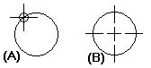
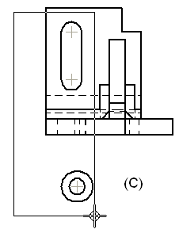
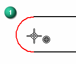
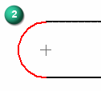
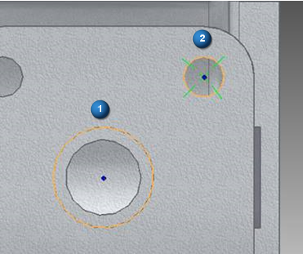
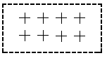
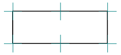
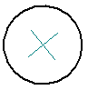
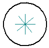

Place a center mark
The Center Mark command adds a center mark to any circle, arc, ellipse, or in free space, and to any hole or slot feature. You also can use a center mark to mark keypoints on an element, such as the endpoints and midpoints of a rectangle.
-
Choose Home tab→Annotation group→Center Mark
 .Note:
.Note:In a model, this command is also available on the PMI tab.
-
On the Center Mark command bar, select the settings you want to use, and then click to place a center mark on one or more elements.
Example:-
To place a center mark on a single curved element, select the Horizontal/Vertical option, and then click the element (A).
The center mark appears at the center point of the element (B).

-
To place center marks on a group of curved elements, click+drag to select the elements (C).

-
To place a center point on an arc, you can locate the arc and press C on the keyboard to select its center point (1) (2).


-
To place a center mark by two coplanar points:
-
Click an arc or circle to identify the center point of the center mark (1).
-
Click an arc or circle to specify the location of the center mark (2).

-
-
To place a center mark in free space:
-
Create a point with the Point command.
-
Locate the point when you place the center mark.

-
-
To place a center mark that is associative to any keypoint honored by IntelliSketch, such as midpoints and endpoints of arcs and lines:
-
On the command bar, click Keypoint Attachment.
-
Select the elements at the locations where you want to add the marks.

-
-
To place a center mark at an angle:
-
From the Orientation list, select Use Dimension Axis.
-
On the command bar, click Dimension Axis.
-
Click a linear element to identify the desired orientation angle of the center mark.
-
Click the element to which you want to add the mark.

-
-
-
In a draft document, you can select elements that are located in multiple views and that are drawn directly on the sheet using click+drag. Only elements that are completely within the selection area will have center marks added to them.
-
You can change the appearance of the center mark by changing its properties. Select the center mark and then choose Properties on its shortcut menu or on the command bar.
-
You can drag a center mark from one parent element to another using Alt+drag.
-
You can place center marks at different angles on a single element by changing the orientation of the dimension axis each time you click.

How do I
Automatically create centerlines and center marks in a drawing viewAutomatically remove centerlines and center marks from a drawing view
Place a centerline midway between two lines
Place a centerline on a slot
Place a center axis on a cylinder or hole feature
Example: Dimension a curved slot
Place a bolt hole circle
Learn more
Centerlines, center marks, and bolt hole circlesLook up more details
Automatic Centerlines commandAutomatic Centerlines command bar
Centerline and Center Mark Options dialog box
Center Mark command
Center Mark command bar
Centerline command
Centerline command bar
Center Line and Center Mark Properties dialog box
Bolt Hole Circle command
Bolt Hole Circle command bar
Bolt Hole Circle Properties dialog box